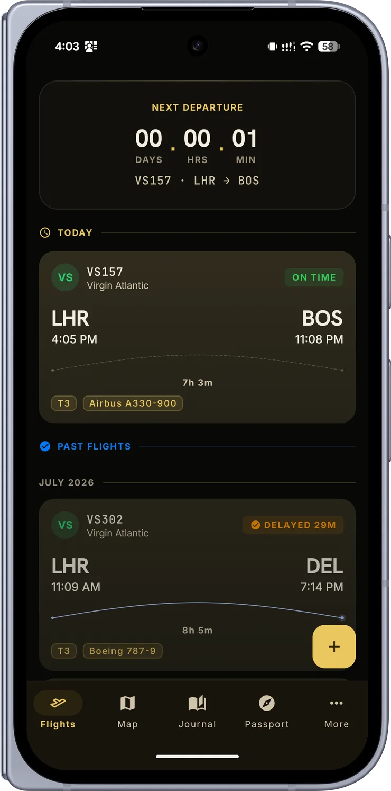
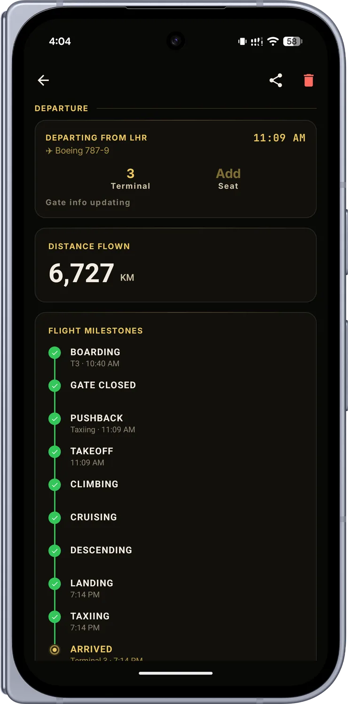
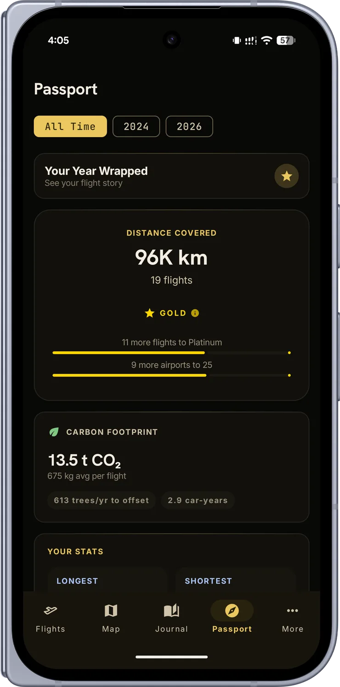
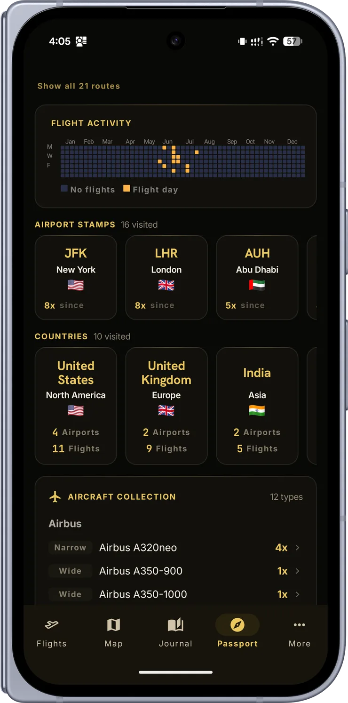
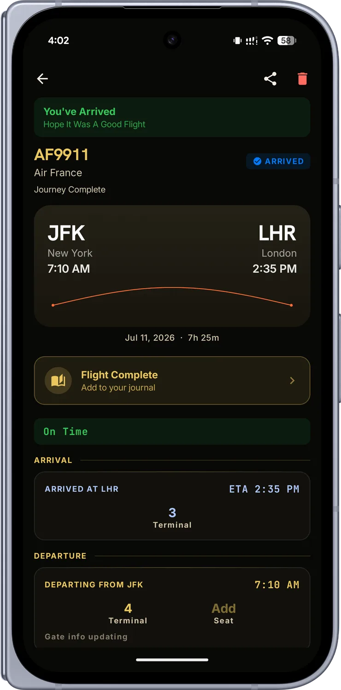
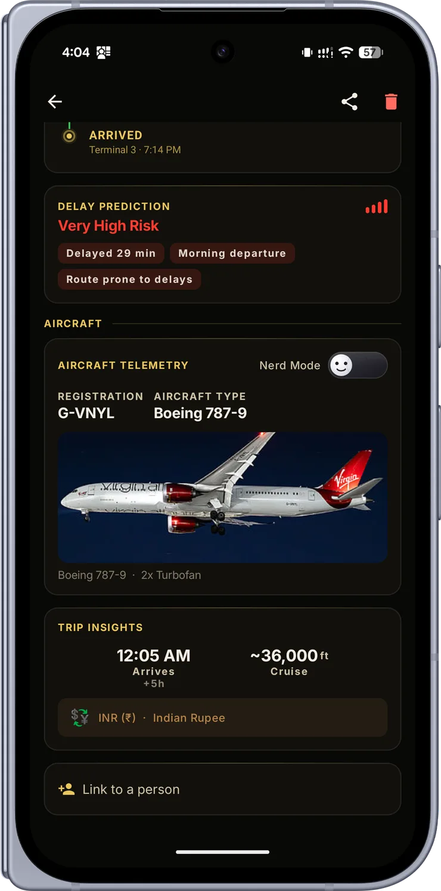
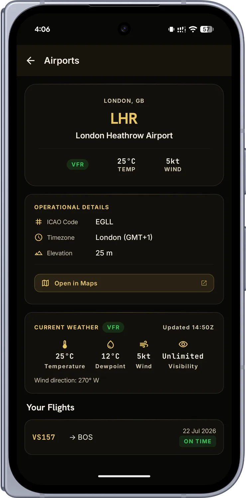
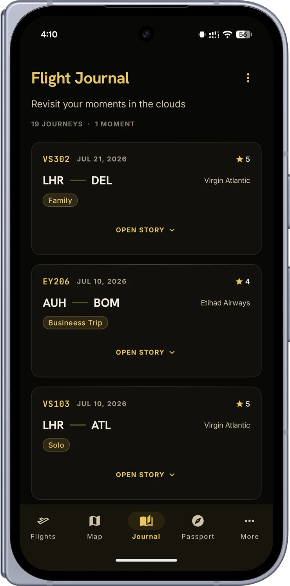

Your window seat for every flight.
Live flight tracking, gate alerts, and a passport of everywhere you’ve flown. Free, private, made by one traveler.
The hour before a flight is the anxious one. Overwing watches it so you don’t have to: gate changes and delay alerts land on your phone the moment they’re filed, often before the departure board blinks. Once you’re airborne, the people picking you up follow the same live map you do, from pushback to touchdown.
Land, and the trip files itself. Airports become stamps, countries fill your map, aircraft join your collection, and your lifetime distance climbs toward the next tier. No spreadsheets, no manual logging. Your travel identity builds itself while you fly.
52,847 km · 23 airports · 12 countries
A journal entry waits after every landing: the photos you took, the people in seat 11B, a line about the view. Tag each trip Vacation or Business and find it again at a glance. Come December, Wrapped turns your year in the air into a story worth sharing.
The same living world map that lives inside your passport, your routes traced in gold.
From the search bar to the year-in-review, here’s what Overwing does.
Real-time position, altitude, and speed, with gate, delay, and boarding alerts as they happen.
Watch your aircraft cross the globe on a real flight path, from pushback to touchdown.
Point your camera at the barcode and the flight adds itself, seat and all.
Find a flight by its number, or a whole city pair when you don’t know it yet.
Bronze to Platinum, airport stamps, country map, and an aircraft collection.
Photos, star ratings, companions, notes, and one glanceable trip label per journey.
A cinematic year-in-review of your flying, with a transparent sticker to paste into your story.
Turn any flight into a card, story, strip, or transparent sticker for anywhere you share.
Five of them: Next Flight, Live Flight, Boarding Pass, Countdown, and Travel Passport.
Assign a friend or family member to a flight and get their day-of alerts too.
Runs fully offline with no account. Sign in only to back up to your own private cloud.
Flights and journal sync to your account. Reinstall, sign in, and everything returns.
Obsidian and gold, mono flight codes, and a route arc that follows every journey.

Live & past flights

Every milestone

Your passport

Stamps & aircraft

Journey complete

Aircraft & telemetry

Airports & weather

The journal
Pro exists to cover what actually costs money to run, not to lock away the good parts.
Auto-renews yearly until cancelled. Manage or cancel anytime in Google Play. Day-of alerts for your saved flights stay free, always.
Any scheduled commercial flight: by flight number, by city pair, or by scanning the barcode on your boarding pass.
Gate and delay changes often arrive before the airport’s own boards. When there’s no live position, the map shows an honest estimate, clearly labeled.
Yes. Assign a companion to any flight and get their gate, delay, and landing alerts. Perfect for airport pickups.
Bronze on your first completed flight. Silver at 5 flights & 2,500 km. Gold at 15 & 10,000. Platinum at 30 & 30,000. Imported history counts.
No ads, no trackers, no data selling, no location access. Everything lives on your device unless you sign in, and your cloud copy deletes with one tap.
Yes, it’s local-first. Saved flights, passport, and journal all work with no connection. Live updates resume when you’re back.
No. Updates are throttled and batched, and there’s no GPS. It sits quietly until there’s something worth telling you.
Yes. Tracking, alerts, the passport, journal, Wrapped, widgets, and cloud backup are all free. Pro (€4.99/year) adds unlimited manual updates and photo backup, and helps cover the aviation-data costs.
No. Overwing runs fully offline. Sign in with Google only if you want your flights and journal backed up to your own private cloud.
Not yet. Overwing is Android-first, built by one person. iOS may follow if there’s demand.
Soon, on Google Play, starting with a closed beta. Email to join.
Overwing exists because I wanted a calm, private, genuinely beautiful place to keep my own journeys, and couldn’t find one. So I built it: one person, a desk in Dublin, late nights and far too much coffee.
There’s no growth team here, no roadmap committee, no ads to chase. Just an app shaped with care for people who love the window seat as much as I do.
Thank you for flying with Overwing.
Ronit · Dublin